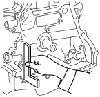

Workshop Manual ➭ ENGINE ➭ LUBRICATION[L8, LF] ➭ OIL PAN REMOVAL/INSTALLATION [L8, LF]
OIL PAN REMOVAL/INSTALLATION [L8, LF]
id0111c6800200
Warning• Hot engine and engine oil can cause severe burns. Turn off the engine and wait until it and the engine oil have cooled.
• A vehicle that is lifted but not securely supported on safety stands is dangerous. It can slip or fall, causing death or serious injury. Never work around or under a lifted vehicle if it is not securely supported on safety stands.
• Continuous exposure to USED engine oil has caused skin cancer in laboratory mice. Protect your skin by washing with soap and water immediately after working with engine oil.
1. Remove the battery and battery tray. (See BATTERY REMOVAL/INSTALLATION [L8, LF].)
2. Remove the air cleaner. (See INTAKE-AIR SYSTEM REMOVAL/INSTALLATION [L8, LF].)
3. Drain the engine oil. (See ENGINE OIL REPLACEMENT [L8, LF].)
4. Loosen the water pump pulley bolt and remove the drive belt. (See DRIVE BELT REPLACEMENT [L8, LF].)
5. Remove the front suspension tower bar (joint, right side, and left side). (See FRONT SUSPENSION TOWER BAR REMOVAL/INSTALLATION.)
6. Remove the plug hole plate. (See PLUG HOLE PLATE REMOVAL/INSTALLATION [L8, LF].)
7. Remove the ignition coils. (See IGNITION COIL REMOVAL/INSTALLATION [L8, LF].)
8. Remove the P/S oil pump with the hose and pipe sill connected. Position the P/S oil pump out of the way. (See POWER STEERING OIL PUMP REMOVAL/INSTALLATION.)
9. Remove the crankshaft position (CKP) sensor. (See CRANKSHAFT POSITION (CKP) SENSOR REMOVAL/INSTALLATION [L8, LF].)
10. Remove the engine front cover. (See TIMING CHAIN REMOVAL/INSTALLATION [L8, LF].)
11. Remove the transverse member. (See TRANSVERSE MEMBER REMOVAL/INSTALLATION.)
12. Remove the member bracket. (MT) (See TRANSMISSION REMOVAL/INSTALLATION [M15M-D].) (See TRANSMISSION REMOVAL/INSTALLATION [P66M-D].)
13. Remove in the order indicated in the table.
14. Install in the reverse order of removal.
15. Refill with the specified type and amount of the engine oil. (See ENGINE OIL REPLACEMENT [L8, LF].)
16. Start the engine and confirm that there is no oil leakage.
• If there is oil leakage, repair or replace the applicable part.
17. Inspect the oil level. (See ENGINE OIL LEVEL INSPECTION [L8, LF].)
18. Inspect for the ignition timing and idle speed. (See ENGINE TUNE-UP [L8, LF].)
|
amxzzw00002434 |
|
1 |
Oil pan (See Oil Pan Removal Note.) (See Oil Pan Installation Note.) |
Note• Lift up the engine approx. 25 mm {0.98 in} to assure clearance for the oil pan removal, then remove the oil pan.
1. Remove the windshield wiper arm. (See WIPER ARM AND BLADE REMOVAL/INSTALLATION.)
2. Remove the cowl grille. (See COWL GRILLE REMOVAL/INSTALLATION.)
3. Remove the side cowl grille. (See SIDE COWL GRILLE REMOVAL/INSTALLATION.)
4. Remove the engine compartment service hole cover. (See EGR VALVE REMOVAL/INSTALLATION [L8, LF].)
5. Remove the front tires.
6. Support the engine using the SST.
|
amxzzw00002435 |
7. Remove the engine mount rubber installation nuts.
|
amxzzw00002436 |
8. Lift up the engine approx. 25 mm {0.98 in} using the SST.
9. Remove the oil pan installation bolts.
10. Remove the oil pan using the separator tool.
|
|
 amxzzw00002437
amxzzw0000243711. Remove the oil pan.
Caution• Apply the silicon sealant in a single, unbroken line around the whole perimeter.
• Using bolts with the old seal adhering could cause cracks in the housing.
|
|
 amxzzw00002438
amxzzw000024381. Completely clean and remove any oil, dirt, sealant or other foreign material that may be adhering to the housing and oil pan.
2. When reusing the oil pan installation bolts, clean any old sealant from the bolts.
3. Use a square ruler to align the oil pan and the cylinder block junction side on the engine front cover side.
|
 amxzzw00002439 |
4. Apply silicone sealant to the oil pan along the inside of the bolt holes as shown in the figure.
|
amxzzw00002440 |
Thickness
2.2—3.2 mm {0.087—0.126 in}
5. Tighten the bolts in the order shown in the figure.
|
amxzzw00002441 |
Tightening torque
17—23 N·m {1.8—2.3 kgf·m, 12.6—16.9 ft·lbf}
6. Tighten the oil pan-transmission installation bolts.
|
amxzzw00002442 |
Tightening torque
37—52 N·m {3.8—5.3 kgf·m, 28—38 ft·lbf}